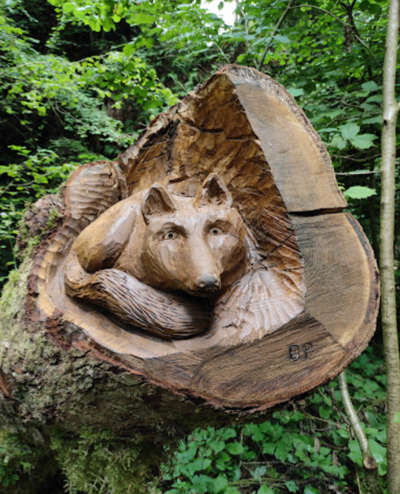

Pordenone is a beautiful city nestled in the northeast corner of Italy. We have many attractions, such as nature trails, ancient chapels, and our famous gelaterias. Learn about some of Pordenone's most popular sites here!
Upcoming Events
- December
Nativites in Poffabro—Come see the nativities that decorate the town! - January
Cucinare—A fair dedicated to food - February
Dedica—A book festival dedicated to a single author
Follow us here for more updates!
The Underwater Christus
Located in Polcenigo at the source of the Gorgazzo River, seventeen feet below the surface rests a Christus. Known as the Polcenigo Underwater Christus, this statue is a famous landmark, though perhaps not quite as famous as its counterpart in the Mediterranean.
The Gorgazzo River itself is also a beautiful site. This river is known for its crystal blue waters. At the mouth of the river is a cave. Divers used to explore it, but too many of these ventures ended in fatality, and so the cave is now closed to divers. You can still see the mouth of the cave from the nearby footpath.
Trail of Carvings
The Sentiero Naturalistico de Gor (Troi de Gor) (or as it translates to in English, the Gor Nature Trail) is one of Pordenone's most popular hiking trails. It is a little under 4.4 miles through a heavily wooded forest. The trail itself is soft and fairly gentle in slope. Lined with gorgeous flowers, mossy trees, and leafy ferns, this is a great trail for the family to take a nature hike!

One of the reasons Troi de Gor is so popular is because of the wooden walkways and carvings that line the trail. There are a few carvings of turtles and foxes made from logs, and even wooden platforms to climb on.
The Chrome Dome

Also known as the Madonna Del Monte Sanctuary, the Chrome Dome is a large chapel located on the slopes of the foothills. The reason for its strange nickname? The large dome at the top of the building is covered in a golden metal. The light flashes off this dome, particularly at sunrise.
It's not just the building you should explore. Close nearby is a hiking trail. Along that trail is a variety of mosaiacs depicting Bible stories; different scenes from Christ's life.
More Sites
Via Castello 92
33070 Budoia PN
+39 (123)-456-7890
cichamber@ciaoitaly.com